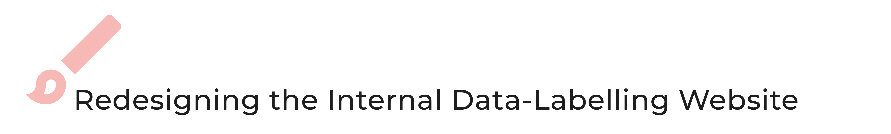

In Summer 2019, I was lucky to intern at one of the largest hardware companies in the world. Lenovo is a multinational technology company that designs, develops, manufactures, and sells personal computers, smartphones, and other electronic devices. I interned at Lenovo’s Advanced System Design Center in Shenzhen, China, with the Computer Vision team.
Lenovo
UX Design Internship
Internship Overview
- Competitive Analysis
- Low to Hi-Fidelity Prototyping
- 12 Weeks
- Summer 2019
- Senior Software Developers
- Product Managers
- Eason Chiu(Fellow SWE Intern)
My Involvements
Timeframe
My Team
Major Projects


For the Computer Vision Team, one of the tasks is data-training. One of the tools they used was an internal data-labelling website. As useful as the website was, it was not easy to learn. So, partnered with an SWE intern, we identified the pain points of the website and proposed a 2.0 version, which was approved and shipped 2 months later.
One of the main achievements of my team this year was automated photo recognition. I was tasked to incorporate the new technology into the existing Lenovo Photo Album. I brainstormed 5 potential use cases and turned them into prototypes. Through many sessions of critiques and iterations, I successfully shipped two features to the Photo Album App:
- System-Generated Photo Albums of Timeframes
- System-Generated Photo Albums of Categories
Takeaways
🤖 Understanding AI-Driven Design
In the design process and frameworks that I have learned, it was always a problem-driven approach. I would first spend a few weeks to look for potential problems and user needs before thinking about solutions. However, in this internship, there were multiple times when I was trying to find problems with a already established technology - a "solution".
This felt strange in the beginning. When searching for problems with a solution, it was hard for me to go as broad as I would normally. But, through countless chats with the staff designers, I gradually learned how to navigate the problem space with a solution in mind. I started to realize that having a solution in mind can serve as a direction for my exploratory research, making me focused on the problems that could potentially be the right locks for the key in my hands.